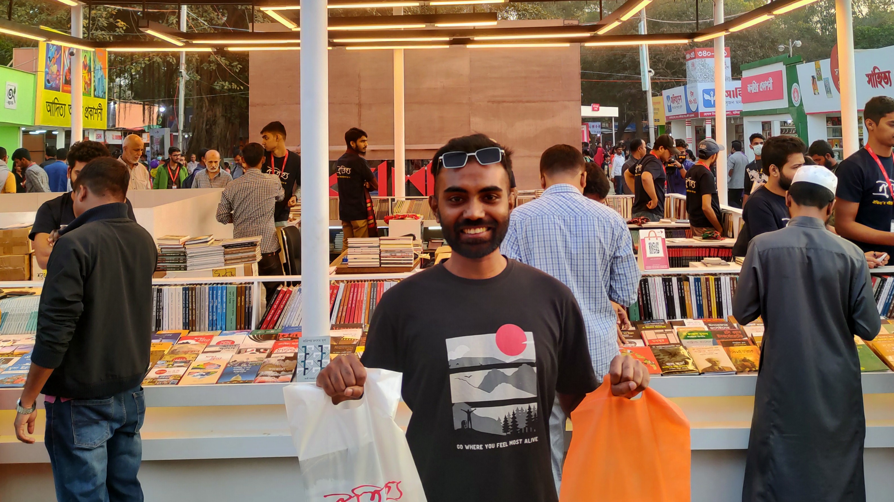
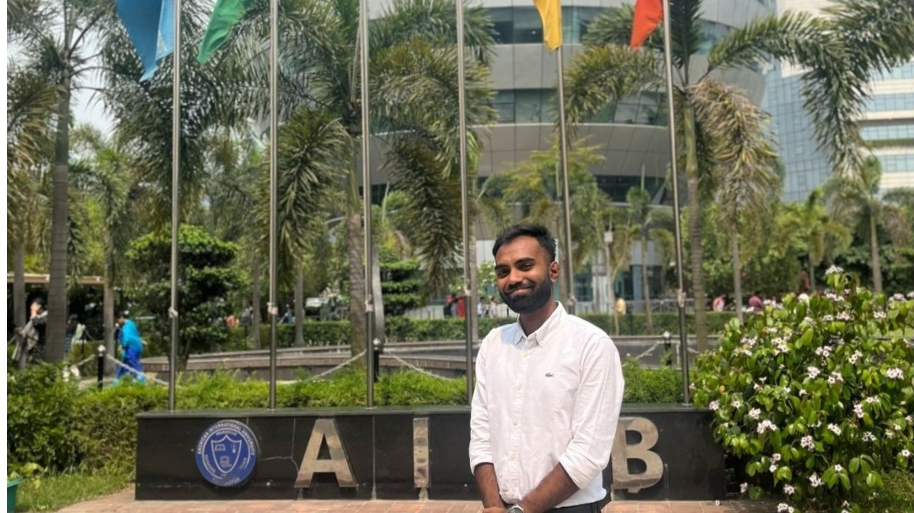

MIS graduate exploring the intersection of technology, data, and business, with a passion for learning, building, and solving problems.
I was born and raised in Jashore District Southwest part of Bangladesh, in an environment where family, friendship, curiosity, and learning have always been an important part of my life. From an early age, I was fascinated by computers and technology—not just by using them, but by understanding what they could do and how they could make things better. That curiosity eventually grew into a strong interest in the connection between technology, business, and data.
I earned my Bachelor of Business Administration in Management Information Systems from the American International University-Bangladesh (AIUB). What drew me to MIS was the idea that technology is more than just software and devices—it can be a powerful tool for solving business problems, improving decisions, and creating opportunities for growth. I became particularly interested in how businesses manage information, how valuable data can be turned into meaningful insights, and how tools and technologies can change the way organizations operate. My studies in Business Intelligence and Decision Support Systems and Data Warehouse and Data Mining strengthened that interest and encouraged me to explore the possibilities of data-driven decision-making.
I am naturally a do-it-and-learn person. I enjoy getting my hands on something new, figuring out how it works, experimenting with different tools, and learning through experience. Technology continues to be one of my biggest interests, but it is only one part of who I am. I enjoy reading, discovering new skills, spending time with friends, and being around people. I have also explored creative interests such as pixel art and have always enjoyed video games. These days, I do not get as much time to play as I used to, but the curiosity and creativity behind those interests are still a part of me. Recently, I have also started playing football, which has given me another way to stay active and connected with others.
I am someone who likes to keep moving, keep learning, and keep experimenting. I believe the best way to grow is to stay curious, take action, and be willing to try something unfamiliar. Whether it is a new technology, a new idea, a new skill, or a completely different challenge, I enjoy the process of figuring things out and turning curiosity into action.


Current song on repeat: